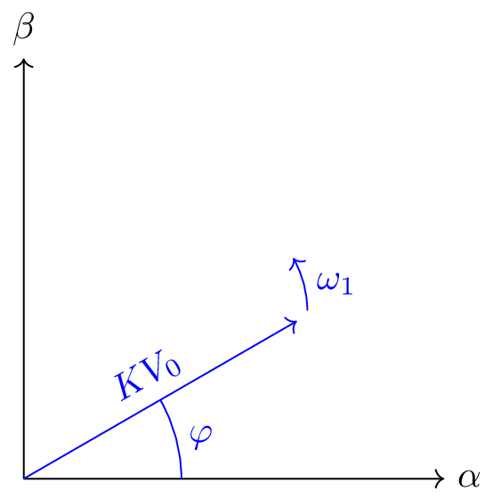
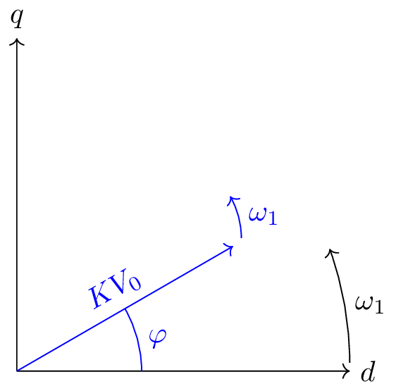

3-phase signal in different reference frames
A 3-phase signal can be represented in different reference frames. The most common ones are abc, αβ0 and dq0. The abc reference frame is the conventional representation, in which electrical signals are represented in the 3-phase abc coordinate system. The αβ0 reference frame is a rotating reference frame, in which the α axis is aligned with the a phase, the β axis is 90 degrees ahead of the α axis and the 0 axis is the homopolar axis.
The dq0 reference frame is also a rotating reference frame, in which the d axis is aligned with the a phase, the q axis is 90 degrees ahead of the d axis and the 0 axis is the homopolar axis. The dq0 reference frame is used in the control of AC machines, because the d axis is aligned with the magnetic flux of the machine and the q axis is aligned with the torque of the machine. The following animation shows the 3-phase signal in the abc and αβ0 reference frame and the 3-phase signal in the dq0 reference frame.


Instructions:
- Use the number inputs to change the amplitude of the 3 phases.
- Use the slider to change the speed of the animation.
- Use the slider to change the phase shift between phase a and the d axis.
- Use the small slider just down here to start/stop the animation.